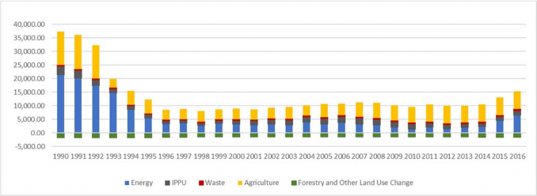
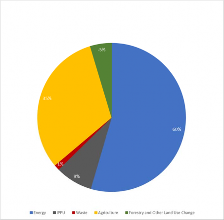
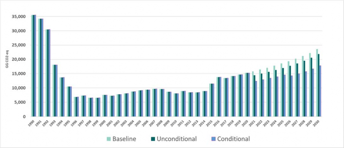

The Republic of Tajikistan is a lower middle-income country, which, on the one hand, has one of the lowest GHG emissions in Central Asia, and on the other hand, is highly vulnerable to climate change impacts. Coping with climate change is a challenge for a landlocked mountainous developing country such as the Republic of Tajikistan. Affected by extreme events and dependent on natural resources, the country is highly vulnerable to climate variability and climate change impacts. Taking into account that climate change will exacerbate existing problems and pose additional risks to the achievement of national development priorities, the Republic of Tajikistan is aimed to address the economic and social impacts of climate change in a sustainable way and initiate transformational change in different economic sectors. The enhancement of adaptive capacity of the community and the different economic sectors by the building of climate resilience across the country is one of the essential pillars of the Republic of Tajikistan. In this regard, the Government of the Republic of Tajikistan in order to address the development priorities requires close cooperation with international and national institutions.
Coronavirus infection (COVID-19) significantly affected the socio-economic situations in the country, including the impact of pandemic on climate change initiatives. This unprecedented situation highlighted the importance to de-risk and properly plan further actions and consider new collaborative opportunities in the field of climate change.
The main objective of NDC of the country is to support the sustainable and efficient development taking into consideration climate change, environmental and socio-economic challenges. The Republic of Tajikistan formally communicated its INDC under the Paris Agreement in 2015 which became its NDC upon ratification of the Paris Agreement in 2017. During this short period, the Republic of Tajikistan has undertaken steps to increase its ambition through development of the national regulatory framework, as well as implementation of different projects and interventions. Mainly, the Republic of Tajikistan has increased its understanding of climate change impact and has made progress in coping with it with help of the international support (financial and technical) and by developing the institutional framework. However, institutional and community capacity in climate risk management requires enhancement.
Unlike country's original NDC, the Updated NDC includes the changes in an unconditional greenhouse gas (GHG) emissions reduction goal for 2030 and a conditional GHG emissions reduction goal. Additionally, the focus on adaptation has been strengthen. The Updated NDC is significantly improved by involving a broader scope of the participants from line ministries, academia, international organizations, donors, nongovernment organizations, business representatives and media, and their continued support during the implementation process is appreciated. Taking into account its national circumstances, the Republic of Tajikistan offers the ambitious targets and measures to achieve the transition to a low-carbon and climate-resilient development in a sustainable manner. The Republic of Tajikistan is keen to achieve a progress towards implementing the Sustainable Development Goals (SDGs) at national level by mainstreaming the focus of Agenda 2030 into the Updated NDC.
NDCs’ revision process involves five key sectors identified as priorities for Tajikistan: agriculture, energy, forestry & biodiversity, industry & construction, transport & infrastructure.
This document enhances the initial effort of Tajikistan NDCs in accordance with decisions 1/CMA.2 of the Paris Agreement, 1/CP.21 of the UNFCCC and Article 4 of the Paris Agreement, as well as the country’s interest to work together with the international community to limit global warming to well below 2, preferably to 1.5 degrees Celsius as stated in Article 2 of the Paris Agreement.
The updated information on Tajikistan NDCs consists of mitigation contributions to be implemented with its own efforts and conditional contributions that rely on adequate international support, namely financial and technical support, technology transfer as well as capacity building. The whole supporting package will accelerate the mitigation efforts and adaptation practice in the Republic of Tajikistan.
The unconditional contribution (NDC) of reducing greenhouse gas emissions in Tajikistan is not to exceed 60-70% of greenhouse gas (GHG) emissions as of 1990, which is the reference year, by 2030.
The conditional contribution (NDC), subject to a significant international funding and technology transfer, is not to exceed 50-60% GHG emissions as of 1990 by 2030.
The adaptation of these measures reflects a broader understanding of the country's high vulnerability to the impacts of climate change, and comprises 5 strategic sectors and 27 lines of action defined for the implementation in the country.
This document contains the scope and the criteria followed by the Republic of Tajikistan to enhance its ambition in adaptation and mitigation efforts of its initial NDCs. Furthermore, the updated NDCs also include information on the initial elements for establishing an Enhanced Transparency Framework as outlined by Article 13 of the Paris Agreement.
Tajikistan as one of the main efforts in its NDC Update process has updated its GHG Inventory from the 1996 IPCC Guidelines to 2006 IPCC Guidelines. It has resulted in a significant increase in the GHG emissions of the country initially reported. As it can be seen in the Figure 1, the entire dataset of the GHG Inventory yields higher values, especially for the period of 1990 to 2003 as for the rest of the years after 2003 year (2004 -2016). The last is owe to the fact that the previous GHG Inventory dataset of 1990 to 2003 was calculated with the 1996 IPCC Guidelines and from 2004 to 2016 with the 2006 IPCC Guidelines. Consequently, the update and harmonisation of the entire GHG Inventory affected the GHG emissions of the base year, which is 1990 by the subsequent increase of the overall GHG emission value of the country from 25.52 MtCO2eq to 35.53 MtCO2eq. The main increase in the GHG emissions is due to the new estimations in Agriculture and in the Industrial Processes and Product Use (IPPU).
The last also affected the initial per capita emissions of the country. In the initial NDC Tajikistan indicated that its per capita emissions value was of 4.1 tCO2eq in 1990. With the current update the new per captia emissions value has increased up to 6.73 tCO2eq in 1990.
Tajikistan considers the update of its GHG Inventory as substantial enhancement to its updated NDC in order to bring more transparency and clarity and understanding, including the mitigation targets.
Figure 1: Greenhouse Gas Inventory of Tajikistan for 1990 to 2016

Source: FAO, based in the GHG Inventory provided by Hydromet and UNDP
The analysis of the GHG emissions per sector shows that in 1990 the 60% of the overall GHG emissions of the country comes from the Energy sector, followed by Agriculture with 35% and IPPU with 9% of the total GHG emissions of the Republic of Tajikistan (Figure 2). Waste and LULUCF has minor weight in the overall GHG emissions of the country in 1990.
Figure 2: GHG emissions of the Republic of Tajikistan in 1990 expressed as percentage

Source: FAO, based in the GHG Inventory provided by Hydromet and UNDP
Although there is an overall increase in the base year, it is necessary to highlight that the last year of the GHG Inventory, which is 2016, solely represents the 39% of the overall GHG emissions emitted in 1990. Therefore, the Republic of Tajikistan believes that this substantial reduction favours the world common goals of global GHG emissions reduction, and with the support of the international community the Republic of Tajikistan can reach a low carbon development.
The Republic of Tajikistan has followed a novel approach of generating a hybrid model for formulating its future GHG emission scenarios. The first step was to establish the macroeconomic and other general parameters that were used for defining the Baseline and mitigation scenarios (Table 1).
The second step was the formulation of the Bottom-up models for each sector considered under the Updated NDC. The sectors considered were: 1) Energy; 2) Agriculture; 3) Forestry (LULUCF); 4) Transport; and 5) Industry and Construction. Once the sectoral assessment was conducted, their GHG estimations were integrated into the overall country scenarios.
Table 1. Macroeconomic and other parameters used for formulating the baseline and the mitigation scenarios of the Republic of Tajikistan for the Updated NDC
|
SCENARIOS |
|||||||
|
Baseline |
Mitigation |
||||||
|
COMMON PARAMETERS |
Includes all policies and measures adopted up to 2020 |
Includes NEW policies and measures from 2020 to 2030 |
|||||
|
Moderate Growth |
Intermediate Growth |
Fast Growth |
Moderate Growth |
Intermediate Growth |
Fast Growth |
||
|
GDP (Real, %/year 2018-2030) |
4-5 % |
5-6% |
7-8% |
4-5% |
5-6% |
7-8% |
|
|
Population |
2% |
2%/year for 2018-2030 (UN Median) |
2%/year for 2018-2030 (UN Median) |
2%/year for 2018-2030 (UN Median) |
2%/year for 2018-2030 (UN Median) |
2%/year for 2018-2030 (UN Median) |
|
|
SECTORAL PARAMETERES |
|
||||||
Source: FAO based on the inputs of UNDP, GIZ, European Commission and the WB
For formulating the projections of greenhouse gas emissions in the Republic of Tajikistan until 2030 (Gg CO2e), three scenarios were formulated:
Baseline scenario. This scenario considers that any mitigation measure would be successfully implemented;
Unconditional scenario. This scenario considers all the existing mitigation measures that will be implemented with country efforts up to 2030; and
Conditional scenario. This scenario considers additional mitigation measures, for implementation of which the Republic of Tajikistan will require a support of the international community.
The results of the formulation of the three aforementioned scenarios could be seen in the Figure 3., where the expected GHG emissions under the Baseline scenario are of 23.54 MtCO2eq by 2030, under an intermediate growth. The last implies that under this scenario the overall GHG emissions of the Republic of Tajikistan would reach the 66.25% of the existing GHG emissions in 1990.
Figure 3: GHG Emissions of the Republic of Tajikistan by scenario

Source: Lopez Blanco, M.J., Martín Ortega, J.L., Rivas, A. 2021. GHG forecasting in key sectors and impact assessment of climate change mitigation policies and measures. Projections of GHG emissions to 2030 in Tajikistan. UNDP
Under the unconditional scenario the GHG emissions expected by 2030 are of 21.87 MtCO2eq. The last represents to 61.55% of the existing GHG emissions in 1990 or a reduction of 7% compared to the baseline scenario.
Whereas under the conditional scenario, the GHG emissions by 2030 will be of 17.83 MtCO2eq, amount that means 50.10% of the GHG emissions of 1990 or a reduction of 24% compared to the baseline scenario.
It is important to highlight that the Republic of Tajikistan has defined an emission cap target in its initial NDC: the unconditional target was an emission cap between 80 to 90% of the GHG emissions of 1990 and the conditional target was an emission cap between 65 to 75% of GHG emissions of 1990. The unconditional target expressed in per capita was of 1.7 to 2.0 tCO2eq by 2030. Whereas the conditional target expressed in per capita emissions was of 1.4 to 1.7 tCO2eq.
For the Updated NDC of the Republic of Tajikistan the mitigation targets were defined based on the three GHG emission scenarios formulated for the Republic of Tajikistan. Therefore, based on the GHG emission projections, the Republic of Tajikistan would have an unconditional target which is an emissions cap of 60 to 70% of existing GHG emissions in 1990. The last means that the Republic of Tajikistan should not goes beyond 21.32 to 24.87 MtCO2eq emitted in 2030. Whereas the conditional target would be an emission cap of 50 to 60% of GHG emissions occurred in 1990. Thus represents a limit of 17.76 to 21.32 MtCO2eq emitted in 2030.
The last if it is expressed as GHG emissions per capita indicates that the unconditional target goes between 1.9 to 2.2 tCO2eq and the conditional target goes between 1.5 to 1.9 tCO2eq per capita by 2030.
The table below provides the summary of the Information on Clarity, Transparency and Understanding (ICTUs) of the enhanced Tajikistan’s NDCs.
|
1. |
QUANTIFIABLE INFORMATION ON THE REFERENCE POINT (INCLUDING, WHERE APPROPRIATE, A REFERENCE YEAR): |
|
|
A |
Quantifiable Information on the Reference Point (including, where appropriate, a reference year): |
|
|
B |
Quantifiable information on the reference indicators, their values in the reference year(s), reference year(s), reference period(s) or other starting point(s), and, as applicable, in the target year; |
The net GHG emissions of the Republic of Tajikistan in 1990 were estimated at 35.53 MtCO2eq. Gases Covered: GHG not controlled by the Montreal Protocol -Carbon Dioxide (CO2), -Methane (CH4), -Nitrous Oxide (N2O). Sectors Covered:
Methodology: 2006 IPCC Guidelines for National Greenhouse Gas Inventories. |
|
C |
For strategies, plans and actions referred to in Article 4, paragraph 6, of the Paris Agreement, or policies and measures making part of NDCs where paragraph 1(b) of the above Agreement is not applicable, Parties are to provide other relevant information; |
Not applicable. |
|
D |
Target indicator(s) compared to the reference one(s), expressed numerically, for example in% or amount of reduction; |
The Republic of Tajikistan is committed to an unconditional target, which is an emissions cap of 60 to 70% of existing GHG emissions in 1990 level by 2030, which stands at 21.32 to 24.87 MtCO₂eq by 2030, or 1.9 to 2.2 tCO2eq per capita. The conditional target of reducing GHG emissions in the Republic of Tajikistan would have an emissions cap of 50 to 60% compared to the 1990 level by 2030, which stands at 17.76 to 21.32 MtCO₂eq by 2030, or 1.5-1.9 tCO₂e per capita if provided access to affordable financial resources, technology transfer and technical cooperation. |
|
E |
Information on data sources used when quantifying the reference point(s); |
The following data sources were used in order to quantify the reference points: i. National Development Strategy (NDS) of the Republic of Tajikistan until 2030; ii. Mid-Term Development Program (MDP) of the Republic of Tajikistan for the period of 2021-2025; iii. First Nationally Determined Contribution of Tajikistan, 2017; iv. National Communications of the Republic of Tajikistan under the UNFCCC; v. The First Biennial Update Report of the Republic of Tajikistan under the UNFCCC, 2019; vi. National GHG Inventories for the period of 1990-2016; vii. National Statistical Data; viii. National Strategy of the Republic of Tajikistan on Disaster Risk Reduction for the period of 2019-2030; ix. National Strategy for Adaptation to Climate Change in the Republic of Tajikistan until 2030; x. Sectoral Strategies of the sectors involved in the NDC implementation, which are: o Agriculture, Irrigation, Energy, Forestry & Biodiversity, Industry & Construction, Transport & Infrastructure. xi. National cross-sectoral long-term strategies, national programs and regulations of the Republic of Tajikistan. xii. Assessments carried out by international development partners. |
|
F |
Information on the circumstances under which the Party may update the reference indicators. |
Throughout the NDCs enhancement process, the reference year and GHG Inventories were recalculated according to the 2006 IPCC Guidelines. Nevertheless, some sectoral assessments were estimated using Global Warming Potential of the 2019 IPCC Guidelines for National Greenhouse Gas Inventories (Agriculture and Forestry). The reference indicators might be recalculated and updated through: ‐ Continuous improvement in the methodological approach to the baseline or the mitigation scenarios; ‐ Improvement in the activity data by virtue of the enhancement of the national statistics; ‐ Application of higher methodological tier from the 2006 IPCC Guidelines for National Greenhouse Gas Inventories; ‐ Update or new national emission factors; ‐ Reduction of uncertainty in the national GHG inventory; ‐ Update of the national GHG inventory according to the 2019 IPCC Guidelines for National Greenhouse Gas Inventories. |
|
F.1 |
Whether the baseline scenario target is static (constant value in a period of time) or dynamic (changing value in a period of time), if applicable; any threshold of significance in order to determine whether changes in emissions drivers are enough to require a recalculation of the scenario. |
The target indicator of the baseline scenario is static as it corresponds to the overall GHG emissions of the Republic of Tajikistan in 1990. The only plausible option of being modified is a transition from the 2006 IPCC Guidelines to the 2019 IPCC Guidelines for National Greenhouse Gas Inventories. |
|
2. |
TIME FRAMES AND/OR PERIODS OF IMPLEMENTATION: |
|
|
A |
Time frame and/or period of implementation, including start and end date, taking into account any further relevant decision adopted by the Conference of the Parties serving as the meeting of the Parties to the Paris Agreement (CMA); |
The deadlines to fulfil the obligations under the enhanced NDCs of the Republic of Tajikistan will begin immediately after the submission of the Updated NDC to the UNFCCC Secretariat. The commitments stated in the document are valid until December 31, 2030. Nevertheless, the Republic of Tajikistan will revise its target indicators in its second NDC to be submitted in 2025. Tracking of the country commitments will be conducted on a biennial basis through the Biennial Update Report (BUR) and the Biennial Transparency Report (BTR). BUR will be the viable reporting mechanism until 2023, and BTR - from 2024 on onwards. Both reports will, according to the requirements of the UNFCCC, communicate the updated GHG inventory and the implementation of the relevant mitigation efforts to fulfil the mitigation targets of the country. |
|
B |
Whether target indicator(s) is/are single-year or multi- year (where applicable); |
The target indicators are single-year and are set for 2030. |
|
3. |
SCOPE AND COVERAGE |
|
|
A |
General description of the target indicator(s); |
The Republic of Tajikistan is committed to an unconditional target which is an emissions cap of 60 to 70% of existing GHG emissions in 1990 level by 2030, which stands at 21.32 to 24.87 MtCO₂eq by 2030, or 1.9 to 2.2 tCO2eq per capita. The conditional target of reducing GHG emissions in the Republic of Tajikistan would have an emissions cap of 50 to 60% compared to the 1990 level by 2030, which stands at 17.76 to 21.32 MtCO₂eq by 2030, or 1.5-1.9 tCO₂eq per capita if support in terms of finance, technology transfer and capacity building is provided to the Republic of Tajikistan by the international community. |
|
B |
Sectors, gases, categories, and pools covered by NDCs, including, where applicable, references to the IPCC Guidelines; |
Gases covered: GHG not controlled by the Montreal Protocol:
IPCC Sectors covered:
The Republic of Tajikistan will reduce GHG emissions at economy-wide level and it has not settled any specific mitigation contribution per sector. |
|
C |
Party’s considerations on paragraphs 31(c) and (d) of decision 1/CP.21; |
The Republic of Tajikistan has included all relevant GHG sources and sinks in its Updated NDC, and is committed to extend its scope and coverage to all categories of anthropogenic emissions. |
|
D |
Mitigation co-benefits resulting from Party’s adaptation actions and/or economic diversification plans, including description of specific projects, measures and initiatives thereof; |
Mitigation co-benefits resulting from the adaptation actions are aligned with the national policies of the Republic of Tajikistan and were identified for each sector as follows: Energy:
|
|
Industrial and construction sector:
Water resources:
Agriculture: Managing the balance between emissions and removals can help guide Tajikistan’s transformational pathway towards a low-carbon and resilient agriculture. There are strong synergies and trade-offs between their impact on productivity, adaptation benefits, GHG mitigation benefits, gender and biodiversity benefits. The mitigation potential in the agricultural sector is assessed as a co-benefit of agricultural development and adaptation measures. Adaptation measures identified have also many synergies with the national objectives to increase agricultural productivity, improve farming profitability and incomes, protect biodiversity and promote gender inclusive agricultural growth. Some measures have a net mitigation co-benefits and are in line with existing polices and measures, such as:
Forestry:
Transport:
|
||
|
Waste utilization:
|
||
|
4 |
PLANNING PROCESS: |
|
|
A |
Information on the planning processes the Party undertook to prepare its NDCs and, if available, on the Party’s implementation plans, including: |
The enhanced NDCs have been formulated on the basis of the first Biennial Update Report (BUR) and the draft of the Fourth National Communication of the Republic of Tajikistan under the UNFCCC (the Fourth NC of the Republic of Tajikistan will be formally approved tentatively on October 30, 2021). The baseline scenario and the mitigation efforts were widely discussed with all national stakeholders between 2017 and 2019. The sectoral assessments were conducted between 2020 and 2021 with the support of the partners of the Climate Action Enhancement Action Package (CAEP) for the energy, agriculture, irrigation, industry & construction, transport & infrastructure and forestry sector. Various meetings at sectoral level and inter-ministerial technical working group took place to agree upon the progress and contents of the sectoral reports, as well as the enhanced NDCs. Hence, in December 2020, the first draft of the enhanced NDCs was submitted to the government and the civil society for comments and suggestions. The latter have been included in the final draft of the enhanced NDCs before their approval. |
|
A.1 |
Domestic institutional arrangements, public participation and engagement with local communities and indigenous peoples in a gender- responsive manner; |
The domestic arrangements for the enhanced NDCs were carried out by the Committee of Environmental Protection (CEP) under the advisory of an Inter-ministerial Technical Working Group (IMTWG), - established for the revision and approval of the NDC, and with the scientific advisory of the National Agency for Hydrometeorology. Specific consultations on gender and climate change were held with the civil society and the Committee on Women’s Affairs and Family. The enhanced NDCs were available for the perusal by the civil society at the website of the CEP. Two multistakeholder meetings were held with the participation of NGOs, business representatives and academia. Those suggestions were analysed and considered by the Government of the Republic of Tajikistan, including by the above-mentioned IMTWG set up to formulate the enhanced NDCs and submit them for approval. |
|
A.2 |
Information on context, including, inter alia: |
|
|
A.2.1 |
National set of conditions, such as geography, climate, economy, sustainable development and poverty eradication; |
Geography. The Republic of Tajikistan is a landlocked country in the southeast part of Central Asia. The country covers an area of 142.100 km2; to the north, it borders Kyrgyzstan (border length: 630 km), to the east - China (430 km), to the south - Afghanistan (1,030 km), and to the north and west - Uzbekistan (910 km). Three mountain systems - Tien Shan, Gissar-Alay and Pamir - occupy about 93% of the country's territory. The terrain height ranges from 300 to 7.495 meters above sea level, with almost half of the country's territory at an altitude of over 3.000 m above sea level (ASL). In addition to the highest mountain peak in the country, Kullay Ismoili Somoni (7.495 m), located in the Pamir mountain range, there are 72 mountain peaks in the Republic of Tajikistan with a height of over 6.000 m ASL. The Republic of Tajikistan is prone to frequent earthquakes, as it is located in a seismic belt that covers the entire southeast part of Central Asia. High mountains are constantly covered with snow, ice and glaciers, which occupy 8.476 km2, or about 6% of the country's total area, and are estimated to contain 576 km3 of fresh water. Melting snow and glaciers feed the rivers of the Aral Sea basin with 6-13 km3 of fresh water per year, which is approximately 10-20% of the total river flow of the basin. One of the topographic features of the Republic of Tajikistan are alpine lakes with a total area of over 680 km2, most of which are located in the eastern part of the Pamir. Among approximately 1.000 lakes, 80% are located over 3.000 m ASL. The features that distinguish the west of the country are foothills and steppes (semi-arid grassy plains), while lowlands are located only in river valleys in the southwest and in the extreme north, where the Republic of Tajikistan owns a strip of land that includes part of the fertile Fergana Valley. Unique natural ecosystems – from hot deserts to cold highlands – are home to a variety of animal species. The vast variety of local flora ranges from drought-tolerant grasses and low-growing shrubs in steppe regions to dense coniferous forests that cover the mountain slopes. Climate. The climate of the country is a continental one. However, a large amplitude of heights in combination with a very complex relief structure determines the formation of unique regional and local climatic zones with large differences in temperatures, characterized by significant daily and seasonal fluctuations in weather conditions. There are abrupt changes in the average annual precipitation – from a minimum level of less than 100 mm in the Eastern Pamirs to 500-600 mm in the Vakhsh river valley in the south and a maximum value of over 2.000 mm on the Fedchenko glacier. |
|
Economy. The economy of the Republic of Tajikistan is a mix of agrarian and industrial ones, where the basis is agriculture: cotton and other various crops cultivation, animal husbandry as well as industry, mechanical engineering, production of aluminium, mineral fertilizers, textile and light industry, energy and production of consumer goods. Relative remoteness and communication isolation from the existing world transport infrastructure, high-mountainous relief, lack of access to the sea shape a largely unfavourable economic and geographical position. The total GDP of the Republic of Tajikistan in 2019 amounted to USD 8.1 billion, which gives USD 840 per capita. The structure of GDP is the following: agriculture - 22%, industry - 15.1%, construction - 15%, services - 35%, transport - 10% and net product tax - 6%. Tajikistan's public external debt at the end of 2018 amounted to USD 2.9 billion (40% of GDP), compared to 24% of GDP in 2014. According to the World Bank, real GDP growth slowed from 7.3% in 2018 to 6.2% in 2019 and will decline to 5.5-5.0% between 2020-2021, reflecting a weaker economic growth in Russia and the decline in world commodity prices associated with COVID-19. Remittance inflows will remain slow in the medium term. Economic activity will be mainly supported by mining, manufacturing and construction. Out of the total employed population, 46% are employed in agriculture, 6.8% in industry, 8.6% in construction, 12.2% in trade and services, 4.6% in the public administration system, 4.1% in healthcare, 8.1% in the education system and 9.3% in other sectors of the economy (finance, communications, science, etc.) Sustainable development and poverty eradication. It is important to stress that the Republic of Tajikistan was included in the list of 10 countries with the fastest rate of poverty reduction over the last few decades. The poverty rate fell from 81% in 1999 to 29.7% in 2017. The extreme poverty rate fell from 73% to 14% accordingly. The analysis of data from 2003 to 2018 showed that the factors that reduced poverty were wage increases, remittances from abroad, timely pension payments, among others. In the world ranking by the Human Capital Index (HDI-0.53), the Republic of Tajikistan was ranked 57th among 130 countries in 2018. According to the Human Development Index (HDI-0.656) of 2019, the Republic of Tajikistan is 129th among 187 countries and according to the Gender Inequality Index (GII- 0.377) the Republic of Tajikistan reached the 84th place in 2019. |
||
|
A.2.2 |
Best practices and experience to formulate NDCs |
Methodology to estimate emissions: the recalculation/update of GHG emissions was carried out in accordance with the 2006 IPCC Guidelines for GHG Inventories. Stakeholder engagement: all key stakeholders, both governmental and non-governmental, were fully involved and constructively engaged in the decision-making when working out NDCs. Commitment: NDCs have been formulated in conformity with the relevant national policies and strategies, in particular the National Development Strategy of the country until 2030, the National Strategy for Adaptation to Climate Change until 2030 and other sectoral plans and programs. The process of formulating the Updated NDC included involvement of the different stakeholders (mentioned above) to make the process as most inclusive possible. |
|
A.3 |
Specific information applicable to the Parties, including regional economic integration organizations and their member states that decided to act jointly under Article 4, paragraph 2, of the Paris Agreement, including the Parties that decided to act jointly under Article 4 paragraphs 16–18, of the Paris Agreement; |
Not applicable |
|
A.4 |
How the Party uses the outcome of the global stocktake in preparation of its NDCs, in accordance with Article 4 paragraph 9, of the Paris Agreement: |
Information on the results of the global stocktake in accordance with Article 4, paragraph 9, of the Paris Agreement will be taken into account when preparing the subsequent NDCs of the Republic of Tajikistan. |
|
A.5 |
Information on adaptation action(s) and/or economic diversification plan(s) resulting in mitigation co- benefits, in conformity with Article 4, paragraph 7, of the Paris Agreement: |
Please refer to Section 3 (d) above. |
|
A.5.1 |
Economic and social consequences of response measures taken into account when formulating NDCs; |
Not applicable |
|
A.5.2 |
Specific projects, measures and activities to be implemented to contribute to mitigation co- benefits, including information on adaptation plans that also yield mitigation co-benefits that may cover, but are not limited to, key sectors, such as energy, resources, water resources, coastal resources, human settlements and urban planning, agriculture and forestry; economic diversification actions that may cover, but are not limited to, sectors such as manufacturing and industry, energy and mining, transport and communication, construction, tourism, real estate, agriculture and fisheries. |
Not applicable |
|
5. |
ASSUMPTIONS AND METHODOLOGICAL APPROACHES, INCLUDING THOSE FOR ESTIMATING AND ASSESSING ANTHROPOGENIC GREENHOUSE GAS EMISSIONS AND, WHERE APPROPRIATE, GREENHOUSE GAS REMOVALS: |
|
|
A |
Assumptions and methodological approaches used for assessing anthropogenic GHG emissions and removals corresponding to the Party’s NDCs, in conformity with decision 1/CP.21, paragraph 31, and accounting guidance adopted by the CMA; |
The Republic of Tajikistan assesses its anthropogenic GHG emissions and removals using the 2006 IPCC Guidelines for National Greenhouse Gas Inventories as guided by decision 1/CP.21 and Article 4, paragraph 13 of the Paris Agreement. |
|
B |
Assumptions and methodological approaches used for assessing the policies, measures or strategies to implement NDCs; |
For the GHG emissions assessment in the baseline scenario, the key elements that could affect the GHG emission values are the following:
For the choice of mitigation efforts, the critical parameters are:
|
|
C |
Estimated impact on GHG emissions and/or non-GHG indicators; methodologies used to estimate impacts, including the baseline scenario and other assumptions; uncertainty of estimated impacts (evaluation or description); information on potential interactions with other policies/actions |
For the sectoral estimations, the following parameters are critical for estimating the baseline scenario and the potential mitigation impact of the foreseen policies and measures:
+ other relevant criteria that affect the expected performance of the sector. |
|
D |
If applicable, information on the way the Party takes into account existing methods and guidance under the Convention to assess anthropogenic emissions and removals, in accordance with Article 4, paragraph 14, of the Paris Agreement; |
Please refer to Section 5 (a) above. |
|
E |
IPCC methodologies and metrics used for estimating anthropogenic GHG emissions and removals; |
The following global warming potential (GWP) indicators are used in compliance with decision 24/CP.19:
|
|
F |
Sector-, category- or activity-specific assumptions, methodologies and approaches consistent with the IPCC Guidance, as appropriate, including: |
|
|
F.1 |
Approach to emissions and subsequent removals from natural disturbances on managed lands; |
Please refer to Section 5 (a) above. |
|
6. |
HOW THE PARTY’S PREPARATION OF ITS NATIONALLY DETERMINED CONTRIBUTION HAS BEEN INFORMED BY THE OUTCOMES OF THE GLOBAL STOCKTAKE, IN ACCORDANCE WITH ARTICLE 4 PARAGRAPH 9, OF THE PARIS AGREEMENT |
|
|
According to Article 14.2 of the Paris Agreement, the Conference serving as the Meeting of the Parties to the Agreement (CMA) shall undertake its first global stocktake in 2023 and every 5 years thereafter unless otherwise decided by the CMA. It is expected that the reduction commitments of the updated NDC of the Republic of Tajikistan will be considered in the Global Stocktake Report to be published in 2023. Subsequent revisions of Tajikistan’s NDC will be informed by the outcomes of the global stocktake in accordance with article 4 Paragraph 9 of the Paris Agreement. |
||
|
A |
How the Party considers that its nationally determined contribution is fair and ambitious in the light of its national circumstances |
|
|
A.1 |
The Republic of Tajikistan considers that its Updated NDC is fair and ambitious as its reducing 30 to 40% of its GHG emissions in 1990 as unconditional target. Whereas the conditional target reaches a GHG emission reduction between 40 to 50% of the base year. The last represents a tremendous effort of the Republic of Tajikistan in order to keep its GHG emissions far below of its peak emissions occurred in 1990. Moreover, the Republic of Tajikistan presents one of the lowest per capita emissions of Central Asia, which expects to be around 1.9 to 2.2 tCO2eq per capita by 2030 as unconditional target and around 1.5 to 1.9 2 tCO2eq per capita by 2030 as conditional target. Finally, for the Republic of Tajikistan is paramount to continue with its development as it is considered a lower middle income country and requires a strong support by the international community in order to achieve its SDGs. |
|
|
B. |
Fairness considerations, including reflecting on equity |
|
|
The updated NDC of the Republic of Tajikistan goes in line with the GHG emissions trajectories towards 2050 and onwards that correspond to keeping global warming in line with the global long- term goal of the Paris Agreement. Furthermore, the Republic of Tajikistan is a non-Annex I Party of the UNFCCC and it is applying the “common but differentiated responsibilities”. Thus, the Republic of Tajikistan is contributing by far more than its initial responsibilities assumed to the Convention. |
||
|
C. |
How the Party has addressed Article 4, paragraph 3, of the Paris Agreement |
|
|
The Republic of Tajikistan takes into account Article 4 paragraph 3 of the Paris Agreement and will submit each subsequent Nationally Determined Contribution with higher ambition and progress towards emission reductions. In the current Update of its initial NDC the Republic of Tajikistan has shown an enhance in its mitigation ambition pushing forward its initial mitigation contribution up to reducing up to 30% of its GHG emissions of 1990 by 2030. To support the limited national resources and technical capacity available to combat climate change through the implementation of the NDC, the Republic of Tajikistan anticipates access to multilateral and bilateral support will be required, including from the Green Climate Fund and other multilateral and bilateral development agencies. |
||
|
D. |
How the Party has addressed Article 4, paragraph 6, of the Paris Agreement |
|
|
Not applicable as the Republic of Tajikistan is not a Least Developed Country nor Small Island Developing State. |
||
|
7. |
HOW THE NATIONALLY DETERMINED CONTRIBUTION CONTRIBUTES TOWARDS ACHIEVING THE OBJECTIVE OF THE CONVENTION AS SET OUT IN ITS ARTICLE 2 |
|
|
A. |
How the nationally determined contribution contributes towards achieving the objective of the Convention as set out in its Article 2 |
|
|
The NDC of the Republic of Tajikistan is fully committed to ambitious national and global climate action to achieve the aims within the Article 2 of the Convention, “aimed at stabilization of greenhouse gas concentrations in the atmosphere at a level that would prevent dangerous anthropogenic interference with the climate system, and to building resilience to the impacts of climate change”. |
||
|
A.1 |
Comparison of the contribution to multiple indicators related to achieving the objective of the Convention as set out in Article 2. Factors that Parties may want to consider |
Not applicable |
|
A.2 |
How the nationally determined contribution contributes towards Article 2, paragraph 1(a), and Article 4, paragraph 1, of the Paris Agreement |
The Nationally Determined Contribution of the Republic of Tajikistan is in line with Article 2 paragraph 1 (a) and Article 4, paragraph 1 of the Paris Agreement. The economy-wide target is consistent with the best available science and scientific data; it is fair and consistent with the level of ambition required to limit the temperature increase to 1.5°C above pre-industrial levels and contributes to the achievement of the Objective of the Convention with enabling economic development in a sustainable manner. |
The Republic of Tajikistan aims to tackle the socio-economic impacts of climate change on vulnerable members of the society, agricultural productivity and water availability, and other sectors by increasing the resilience of different communities in the Republic of Tajikistan, as well as decreasing vulnerability capacity of different stakeholders in the country.
The Republic of Tajikistan has a regulatory and institutional framework for implementing adaptive measures aimed at solving problems related to climate change. Many state bodies and institutions are implementing programs related to adaptation to climate change and all of them are accountable to the Government of the Republic of Tajikistan.
General guidance for coordinating activities on climate change adaptation of sectoral ministries and departments is led by the Committee for Environmental Protection (CEP) under the Government of the Republic of Tajikistan.
In accordance with the governmental decree, the Committee is responsible for the implementation of the National Strategy for Adaptation to Climate Change of the Republic of Tajikistan for the period until 2030. Moreover, the CEP is also the National Designated Authority (NDA) to the Green Climate Fund (GCF).
It should be noted that after the signing of the Paris Agreement and the submission of the first NDC, a number of strategic documents, programs and concepts were adopted, which directly or indirectly affects the adaptive measures aimed at reducing the impact of climate change.
The National Development Strategy of the Republic of Tajikistan until 2030 (NDS 2030), adopted in 2016, outlines the general directions of economic development, the implementing measures that can help to reduce the impact of climate change, which include: i) the use of non-traditional (renewable) energy sources; ii) the minimization of the negative impact of the transportation on the environment and human health; iii) fostering the development of "green employment", expanding the environmental entrepreneurship and the environmental services market with the support of the state.
The National Strategy for Adaptation to Climate Change of the Republic of Tajikistan for the period up to 2030 (NSACC 2030), adopted by the Government of the Republic of Tajikistan on October 2, 2019, became a strategic document to achieve the goals stated in the Paris Agreement. This strategy summarizes the information needed to identify risks, threats and adaptive measures related to climate change. The Government of the Republic of Tajikistan has prioritized four sectors that are both climate sensitive and development priorities: i) energy; ii) water; iii) transport; and iv) agriculture. The strategy outlines adaptive measures in key sectors of the economy, and suggests mechanisms and sources of financing.
In the Medium-Term Development Program of the Republic of Tajikistan for 2016-2020 (MDP 2016-2020), the main measures to reduce the impact of climate change consist of expanding access to natural resources and their rational use, creating legal protection mechanisms, providing financial support and meeting the needs for new technologies, developing a green economy and preventing the risks of climate change. Development of renewable energy sources, modernization of all types of transport, construction of 6 hydroelectric power plants with a capacity of 700 kWh, reconstruction of 700 km of highways.
In the Medium-Term Development Program of the Republic of Tajikistan for 2021-2025 (MDP 2021-2025), adopted by the Government of the Republic of Tajikistan on April 30, 2021, under Decree No. 168, a special section is devoted to environmental protection, climate change and natural disasters. The adoption of NSACC strengthens the mechanisms for deploying capacity building processes on climate change adaptation of employees of authorized bodies and civil servants. Furthermore, the development of gender-sensitive indicators for climate change were noted as adaptive measures. Within the framework of this program, sectoral measures for adaptation to climate change have been formulated.
The issues of adaptation measures related to climate change after the submission of the first NDC were also reflected in sectoral programs, strategies and plans.
In the framework of adaptation measures, the Agricultural Reform Program (2012-2020) implies development and implementation of new agricultural technologies (for example, drought-resistant crops), research, setting up a support system for the development of livestock and meeting the needs of farms in better breeds and pastures, improved structure of sown areas for fodder crops.
In the framework of adaptation measures, the Comprehensive Program for the Development of Livestock in the Republic of Tajikistan for 2018-2022, considered as one of adaptation measures, imples selection and improved breeding, cultivation technology and feeding rates, as well as increased productivity of pastures.
In the framework of adaptation measures, the Program for the Development of Pastures for 2016- 2020 envisages to increase the stocks of pasture fodder, promotes an increase in the number of highly productive livestock, preparing land for sowing seeds, improving the condition of grazing lands, repairing and building roads and bridges, improving the condition of 1500 hectares of pastures, importing and producing grass seeds, and repairing livestock routes.
The Program for Reforming the Water Sector of the Republic of Tajikistan for 2016-2025 envisages the development of a long-term basin plan for the use and protection of water resources in 5 river basins, the development of seasonal and annual plans for the distribution and management of water resources in river basins, the restoration of irrigation infrastructure and improvement of conditions for its maintenance and operation, the introduction of new water-saving technologies.
In the framework of adaptation measures, the National Strategy of the Republic of Tajikistan on Disaster Risk Reduction for 2019-2030 ensures access of all stakeholders to information on disaster risk, integrating disaster risk management into development processes, and improving mechanisms for disaster preparedness and response.
In the framework of mitigation and adaptation measures, the Strategy for the Development of Industry in the Republic of Tajikistan until 2030 implies the introduction of new technologies related to reducing emissions of harmful substances into the atmosphere, saving raw materials and energy resources.
According to the State Target Program for the Development of the Transport Complex of the Republic of Tajikistan until 2025, the life cycle of the transport infrastructure will be increased, which will make it more resilient to climate change. The main goal of this action is to bring the transport infrastructure in line with international environmental standards. Specific activities include improving pavement, increasing traffic capacity, building bypass roads in settlements, applying paints, plastics and protecting metals from corrosion, and creating roadside protection belts. This measure is integrated into numerous road construction and reconstruction projects that are being implemented and planned in the country.
The Draft Strategy for the Development of Forestry for the period 2016–2030 defines priorities for the development of national forestry which includes realization of institutional, legal and financial reforms; and development of the forestry management framework. The goal of the Forest Strategy is sustainable development of the sector by ensuring a balance of ecological, economic and social functions. While the Action Plan for the implementation of the Forestry Sector Strategy lists detailed activities along with specific targets, due to issues with investment, budget and capacity, most activities have not been started and targets remain challenged to be attained.
Tajikistan's high dependence on climate-sensitive sectors of the economy is a factor that increases the country's vulnerability to climate change and extreme weather events.
According to preliminary forecasts, the average annual temperature in the country will increase between 0.2 °C and 0.4 °C, by 2030 and the average annual rainfall will decrease by 5% by 2050.
As a result of consultations with key ministries and government departments, NSACC 2030 identifies the following sectors as the most susceptible to climate change: energy, water resources, agriculture and transport.
The main risks and impacts of climate change on the main sectors of the economy were identified and ranked based on the analysis of NDS 2030, NSACC 2030, the Medium-Term Development program for 2016-2020, the Draft Medium-Term Development program for 2021-2025, sectoral strategies and programs, consultations with representatives of academia, civil society, employees of relevant ministries and departments, and development partners.
The highest goal of the long-term development of the Republic of Tajikistan is to improve the living standards of the country's population on the basis of ensuring sustainable economic development. To achieve it, NDS 2030 defines the following strategic development goals for the next 15 years: a) ensuring energy security and efficient use of electricity; b) breaking the communication deadlock and transforming the country into a transit country; c) ensuring food security and access of the population to quality food; d) expansion of productive employment.
Energy production and transmission in the Republic of Tajikistan is susceptible to climate change and related extreme weather events. Due to the interconnectedness of energy and water systems, changes in rainfall, increased risk of drought, reduced snow cover and varying snowmelt times can adversely affect energy production and delivery.
Agriculture. Another priority sector, covering a significant part of the population of the Republic of Tajikistan and providing livelihoods, income and employment, is affected by climate change. Climate- related droughts, declining rain fed agriculture, declining yields and production, as well as crop failures and loss of livestock can have a detrimental effect on dehkan farms.
Climate change is expected to have major impacts on forests, especially those important to produce non-timber forest products such as walnuts, pistachio fruits and berries. The changes in precipitation, temperature will likely lead to reduced forest productivity and increased natural hazard risk such as forest fire. These trends are also resulting in a changing regional distribution of forests (and narrowing production zones for alpine species), as well as an increasing incidence of pest and disease.
Climate change can also directly affect the transport sector through inefficient infrastructure. Highways, which comprise more than 90% of passenger and freight traffic, may be affected by more frequent or intense flooding. Increased rainfall and flooding can accelerate the degradation of road infrastructure.
Taking into account risk indicators, climate change impacts and existing adaptive potential in the country, the most vulnerable regions to climate change in the Republic of Tajikistan were identified. Where the most vulnerable area is the central mountainous regions of the Republic of Tajikistan, followed by the populated southern mountains and lowland regions of the country (Khatlon region) and by the northern slopes of Zeravhsan and Turkestan (Sughd region)1.
In order to sign up to the SDGs and the Sendai Framework for Disaster Risk Reduction, based on the goals and objectives of the National Strategy for Disaster Risk Reduction for 2019-2030 and information received from the Committee on Emergency Situation and Civil Defence, the main types of risks and losses from natural disasters related to climate change were identified. The main types of natural disaster risks causing the greatest damage are: high water and flooding, landslides, mudflows, avalanches and drought.
To overcome the current and future serious economic and social consequences of climate change in the Republic of Tajikistan, it is necessary to encourage an implementation of effective adaptive measures and avoid maladaptation, across the priority sectors of the economy. In order to mitigate the effects of climate change, a number of strategic documents, programs and approaches have been adopted to address the implementation of adaptive measures.
The National Development Strategy until 2030 (NDS 2030) defines the general directions of economic development, which, if implemented, can contributes to reduce the climate change through the implementation of necessary adaptive measures which aims to use more renewable energy sources, minimize the impact of the transport sector on the environment and foster the development of "green employment".
The National Strategy for Adaptation to Climate Change in the Republic of Tajikistan until 2030 (NSACC 2030), adopted by the Government in 2019, is a consolidated strategic document reflecting measures to adapt to the climate change in the Republic of Tajikistan.
During the national consultations on NSACC, four sectors were identified as adaptation priorities, taking into account both vulnerability to climate change and development priorities. Those are: (1) energy, (2) water resources, (3) transport and (4) agriculture. Seven cross-cutting areas were also included: (1) health, (2) education, (3) gender, (4) youth, (5) migration, (6) environment, and (7) emergencies.
Based on the targets formulated in NDS 2030 framework, the NSACC takes into account the provisions of other fundamental documents, namely the Medium-Term Development program for 2021-2025, the preliminary results of the Fourth National Communication of the Republic of Tajikistan under the UNFCCC (2021), sectoral programs and strategies, research carried out by development partners, as well as consultations with specialists from key ministries and departments, and defines long-term adaptive measures to be implemented in the key sectors of the economy. Those sectors are: (1) energy, (2) water resources, (3) agriculture and forestry, (4) transport and infrastructure, (5) industry and construction, as well as cross-sectoral sectors of the economy, which are: i) education, ii) health, iii) migration, iv) environmental protection, and iv) gender.
Development partners have greatly contributed to the Republic of Tajikistan in the identification of adaptive measures at sectoral level in the process of updating its NDC.
The United Nations Development Programme (UNDP) carried out an analysis of the sectors of industry and construction, as well as transport as part of the enhance of its initial NDCs reduction of GHG emissions in accordance with the UNFC. Special sections of these reports are devoted to policy and adaptation measures in the industrial, construction and transport sectors, which are also included in the climate change priorities.
The Deutsche Gesellschaft für Internationale Zusammenarbeit (GIZ, German Society for International Cooperation) conducted an analysis of the land use sector and an in-depth analysis of the agricultural sector for the NDC revision in the Republic of Tajikistan. Based on the analyses, the identified risks, and their impact, the report develops specific adaptation measures.
The World Bank analyzed the forestry sector, its potential contribution to mitigation and adaptation and prepared a report on “Forestry Sector Analysis for NDC Revision and Updating in the Republic of Tajikistan”.
The Food and Agriculture Organization of the United Nations (FAO) has prepared an analytical report Irrigation and climate change in the Republic of Tajikistan. State and Trends of Water Resources. Based on a comprehensive analysis of the irrigation system and existing problems, a list of adaptation measures was submitted and then included in the general plan to update NDCs for the water sector.
Based on the general analysis of the information received, the following adaptation measures have been formulated for the key sectors of the economy:
Key adaptation measures in the energy sector include:
development of short-term impact models and effective adaptation options for extreme weather conditions such as droughts;
raising the level of qualifications of sector specialists in methods of assessing climate risks and vulnerability;
taking measures to ensure the security of the infrastructure;
revision of maintenance procedures and measures to improve the safety of transmission and distribution networks from weather events;
development of networks of small hydroelectric power plants and widespread development of other renewable energy sources in the remote mountainous and rural regions of the country;
strengthening hydropower potential and increasing the reliability factor taking into account the effects of climate change (increase in maximum floods or decrease in runoff).
A list of adaptation measures for the use of water resources is envisaged, addressing the problem of water scarcity in the future and therefore
increasing the efficiency of water use, recycling, processing and demand management;
strengthening the capacity of Water Users Association (WUAs);
stricter regulation of wastewater treatment and discharge, providing backup systems for storage water resources management;
improvement of groundwater management;
widespread application of the principles of integrated water resources management (IWRM);
rehabilitation of irrigation systems and drainages to improve reclamation of saline lands and wetlands;
use of effective irrigation methods (drip irrigation);
improvement of the water flow forecasting system;
development of national measures for adaptation and resilience to climate change in the water sector.
Tajikistan’s agriculture is very vulnerable to climate change. Without substantial adaptation measures, food and nutrition security, poverty eradication and sustainable development may be adversely affected. Adaptation measures are of priority both for crop production (including cereals and leguminous crops, technical crops, vegetables and horticulture and viticulture) and livestock sub- sectors. Agricultural adaptation measures contribute to national policy objectives for agriculture, food and nutrition security, gender, disaster risk reduction, industrial development, and biodiversity conservation (e.g., National Biodiversity Strategy and Action Plan under the CBD), and thus contribute to multiple SDGs, the Sendai Framework and commitments under the CBD and the UNCCD. Giving high priority to agricultural adaptation enhances the NDC by maximizing synergies with other key development objectives.
Introduction of "green" technologies and "green" infrastructure in agro-industrial production
Improvement of livestock breeding,
Development of agroforestry and conservation agriculture,
Crop rotation, intercropping and crop diversity (resilience to droughts and pests),
Enhancement of seeds,
Promoting soil protection and integrated pest management,
Improved management of irrigation and drainage systems,
Improved pasture management,
Raising awareness and increasing access to climate change information for rural populations, farmers and agricultural enterprisers.
In forestry, adaptation measures (many of which also have strong mitigation benefits) include reforestation/afforestation, natural and active/assisted regeneration, forest protection from cutting, grazing, fire, pests etc., improved and sustainable management of existing forest, improved pasture productivity, promoting crosscutting actions: integrated land management, improving the regulatory framework, strengthening law enforcement, developing a sustainable financing system, conducting inventory and monitoring, and investing in science and innovation.
List of adaptation measures in the transport sector:
improving the protection and long-term maintenance of transport infrastructure;
updating national building codes for the construction of bridges;
providing support to improve infrastructure and access roads in the country, in particular in hazardous and vulnerable areas;
adapting rail, road, air and all modes of transport, including non-traditional and special modes of transport, to the requirements under international standards;
promoting the implementation of incentives and regulations for fuel-efficient vehicles.
equipping large enterprises with modern energy-saving and digital technologies;
a national industrial sector that embraces the environmental protection and creation of a green economy; introduction of rational consumption and production patterns; greening of industry;
development of sustainable infrastructure based on the implementation of green investment projects;
creation of early warning systems for the adoption of protective measures and prevention of damage and loss of infrastructure.
Adaptation measures in cross-sectoral areas:
creating an enabling environment for the introduction of new technologies for climate change mitigation and disaster risk management;
taking gender-sensitive measures to enhance planning;
management and communication of risks related to climate change; construction of new recreational zones within cities and around them when adjusting master plans;
developing curricula for secondary schools, secondary vocational and higher educational institutions, including issues of climate change mitigation, adaptation and early warning of natural disasters;
strengthening mechanisms to organize a regular professional training of the employees of authorized bodies and government officials on climate change adaptation and governance;
arranging media campaigns on climate change and disaster risk management.
In recent years, the Republic of Tajikistan has been actively involved in strengthening adaptive measures, both at the international and regional levels.
The Republic of Tajikistan was nominated to participate in the Pilot Program for Climate Resilience (PPCR) in January 2009. Funding for PPCR was provided by multilateral development banks (MDBs). Within the framework of the MDBs, six PPCR projects were approved and implemented for a total amount of more than USD 150 million. PPCR Secretariat and Coordination Mechanism have been established to coordinate and monitor PPCR projects.
The successful implementation of the PPCR has facilitated the Republic of Tajikistan in cooperation with the Green Climate Fund (GCF). According to GCF’s procedures, the Committee of Environmental Protection (CEP) was appointed by a governmental decree as a National Designated Authority (NDA) under GCF. A coordination mechanism has been created for a successful cooperation with GCF. Thanks to the successful work of NDA and the technical working group, as well as an active support of Accredited Entities (AEs) under GCF in the Republic of Tajikistan, GCF has approved five projects aimed at adaptive measures, which makes a total of more than USD 100 million. Those projects focus on ensuring food security, increasing resilience of the energy sector, improving services of the hydrometeorology system, raising climate financing for small businesses and working out the National Adaptation Plan.
The Republic of Tajikistan did not cooperate much with the Adaptation Fund before, but in 2020, with UNDP assistance, it obtained a grant of almost USD 10 million to implement the project Integrated landscape approach to increasing the climate resilience of small farmers and pastoralists.
The Republic of Tajikistan also maintains bilateral cooperation on adaptation to climate change with the World Bank (WB), Asian Development Bank (ADB), European Bank for Reconstruction and Development (EBRD), IB, Global Environment Facility (GEF), International Fund for Agricultural Development (IFAD), UK Department for International Development (DFID), GIZ.
The Republic of Tajikistan takes part in cooperation with the countries of Central Asia within the framework of the International Fund for Saving the Aral Sea (IFAS), the Regional Environmental Centre for Central Asia (CAREC) (Almaty), the Regional Mountain Centre for Central Asia (Bishkek) and the Regional Centre for Combating Drought (Tashkent). The Republic of Tajikistan is also implementing the Climate Adaptation and Mitigation Program for Aral Sea Basin (CAMP4ASB) Project funded by the GCF and administered by the World Bank.
The Republic of Tajikistan participates in the World Bank Resilient Landscapes in Central Asia and Afghanistan Program (RESILAND CA+ Program), which was developed in 2019 to provide a regional framework for landscape restoration with the aim to increase the resilience of regional landscapes in Central Asia. This umbrella program finances analysis, and advisory on topics related to landscape restoration and supports investment projects in Central Asia countries, one of which is the Tajikistan Resilient Landscapes Restoration Project (under preparation). The Project is developed alongside RESILAND CA+ projects in Uzbekistan, Kyrgyz Republic, and potentially Afghanistan, glued together by a regional platform for high-level dialog on landscape restoration.
The Sustainable Development Goals until 2030 (SDGs 2030). Analysis of the multi-sectoral SDGs made it possible to draw up Tajikistan's profile in this respect and to align the country' goals of development strategies and programs, including those related to the adaptive measures to climate change, with the SDGs.
Sixteen of the seventeen SDGs are related to the development country's goals and priorities. However, the Republic of Tajikistan cannot meet all SDGs in an equal way: some adaptive measures to climate change require a boost in implementation speed. Besides, out of the numerous contemplated measures to accelerate the work to achieve the SDGs related to adaptation to climate change, it is necessary to choose those that meet the sustainable development objectives of the Republic of Tajikistan. Thus, five strategic programs and strategies, including NDS 2030, NSACC 2030, the program for Reforming the Water Sector of Tajikistan for 2016-2025, MDP for 2021-2025, the program of Agrarian Reform of the Republic of Tajikistan for 2012-2020, contain adaptation measures corresponding to the SDGs, especially Goals 2, 5, 6, 7, 8, 9, 13 and 15.
Sendai Framework for Disaster Risk Reduction 2015-2030. In accordance with the new approaches of the world community to the problems associated with the risk of natural disasters, including those increased by climate change, set out in the Sendai Framework and the SDGs 2030, the Republic of Tajikistan adopted the Updated National Disaster Risk Reduction Strategy for 2019-2030 on December 19, 2018. Specific adaptation measures aimed at reducing natural disasters are proposed in NDS 2030, NSRDR 2030, NSACC 2030, and MDP 2021-2025.
Convention on Biological Diversity. In 2016, in order to fulfil the obligations of the Republic of Tajikistan under the Convention on Biological Diversity (Article 26) and based on the decision of the Conference of the Parties 10 (COP 10), the National Strategy and Action Plan for the Conservation of Biodiversity of the Republic of Tajikistan until 2020 was formulated. Environment: Climate Change and Disaster Risk Management section of MDP 2021-2025 defines the increased resilience of ecosystems and existing biodiversity to climate change as one of the key objectives.
United Nations Convention to Combat Desertification - UNCCD. The National Action program to Combat Desertification takes into account the following factors: 1) process of desertification, 2) high mountains, 3) natural disasters, 4) land, pasture degradation, 5) soil drainage, 6) the development of erosion processes in the zone of rainfed agriculture and irrigated lands, and 7) the deterioration and loss of biodiversity.
Astana Resolution. In 2018, the Republic of Tajikistan along with five other Caucasus and Central Asian countries signed the Astana Resolution to restore about 2.7 million hectares of degraded forest landscapes. The Republic of Tajikistan specifically committed to restore 66,000 ha of degraded forest landscapes from 2018-20302.
3.8. Obstacles, challenges and gaps in the implementation of adaptive measures. The existing obstacles, problems and gaps associated with the implementation of adaptive measures are mostly reflected in the strategic strategies and programs of the Republic of Tajikistan.
NDS 2030 displays the obstacles, problems and gaps associated with the implementation of adaptive measures at national as well as sectoral level. The strategy outlines general problems related to adaptation measures. In particular, it is stressed that environmental problems and vulnerabilities remain significant, especially in the context of climate change mitigation and adaptation.
In NSACC 2030, the main obstacles, problems and gaps to implement adaptive measures include legal, institutional obstacles and shortcomings in the technical capacities available in the country.
The section Environment: Climate Change and Disaster Risk Management of MDP 2021-2025 also contains a list of the main problems, tasks and goals related to the implementation of adaptive measures, including those at the sectoral level.
Based on the analysis of strategic documents, the main obstacles, problems and gaps in the implementation of adaptation measures include insufficiencies in funding, capacity building and introduction of new technologies.
Insufficient funding: lack of funding for long-term development plans and effective allocation of resources, both on the side of donors and the state. There is no clear mechanism for tracking financial resources aimed at adaptation and mitigation activities, both from development partners, as well as from the private sector, and the contribution of the government. In order to solve this problem, the development of indicators is required to determine the contribution of development partners, the private sector and the government. Monitoring procedures should include procedures for budgeting national and subnational funding sources. In the Republic of Tajikistan, there are practically no market mechanisms for attracting financial resources on climate change issues (renewable energy market certificates, emission trading mechanisms, environmental insurance).
Obstacles and challenges to capacity building and the introduction of new technologies: the relatively low level of public awareness of the problems of climate change, as well as the benefits of adaptation among professionals. Until now, there is practically no system of consolidated monitoring and evaluation of the introduction of new technologies and capacity building. Analysis of available technological solutions in the Republic of Tajikistan within the framework of development partnership projects shows that they cover only the agricultural and water sectors (irrigation technologies, namely technologies for water saving and processing agricultural products), as well as housing conditions of the population, while the transport sector and disaster risk management technologies are not included in this list. However, some of the proposed technology solutions are related to climate change mitigation and focus on poverty reduction rather than climate change adaptation policies. Therefore, there is a need to find a balance. Problem solving, capacity building and introduction of new technologies must be implemented simultaneously. Currently, there is practically no database in the Republic of Tajikistan on traditional methods of adaptation to climate change.
3.9 Gender aspects of climate change
The Government of the Republic of Tajikistan has approved a number of strategies and plans to address gender equality and climate change adaptation.
Following the ratification of the Convention on the Elimination of All Forms of Discrimination against Women in 1993, the Government of the Republic of Tajikistan approved a number of legal and regulatory documents that may indirectly affect the resilience of women and girls to the risks of climate change: Family Code of the Republic of Tajikistan (dated November 13, 1998); Decree of the President of the Republic of Tajikistan "On measures to improve the status of women in society" (December 1999); the fundamental Law of the Republic of Tajikistan “On State Guarantees of Equality of Men and Women and Equal Opportunities for the Employment”, adopted on December 15, 2004; State program "Main axes of state policy to ensure equal rights and opportunities for women and men in the Republic of Tajikistan for 2001-2010."
The National Strategy for Enhancing the Role of Women in the Republic of Tajikistan for 2011-2020 defines goals for women’s economic empowerment, including opportunities of training new skills and specialties. The strategy proposes a number of measures that can reduce the impact of climate change on women and increase their adaptive capacity.
The gender aspects of climate change are included in NDS 2030 (2016). The strategy builds on the commitment of the Government of the Republic of Tajikistan to achieve the SDGs, including SDG 5 (Gender Equality). The strategy emphasizes the need to address gender equality and climate change, in particular in the context of rural areas, in order to ensure sustainable development.
NSACC 2030 describes how the Republic of Tajikistan can invest in building resilience to climate change, taking into account the multifaceted issues of gender, youth and other vulnerable groups. The strategy recognizes the vulnerability of women involved in agriculture.
MDP 2021-2025 reveals specific goals and indicators related to the gender aspect of climate change. For example, one of the gender goals is to increase women's awareness of the risks of climate change from around 15% now to 35% in 2025. In order to make regulatory documents comply with international standards, the goal is to develop gender-sensitive indicators on climate change and disaster risk management by 2022. Gender-sensitive indicators are also included in such sectors of the economy as agriculture, water supply and energy, social protection, education and health.
In order to discuss the issues of the relationship between gender and climate change, a common level of understanding of gender inequality is clearly needed. In the Republic of Tajikistan, as shown by the results of surveys, there are two key factors that create the context for current efforts to achieve gender equality: on one hand, traditions and gender stereotypes on the role of women in family and society, and on the other hand, a large number of female-headed households due to large-scale male labor migration.
Based on the results of the review and in order to promote a link between gender and climate change in the Republic of Tajikistan, the following measures are planned:
Raising awareness and improving understanding of the connection between gender and climate change in the development context;
Promotion of nexus of gender and climate change in planning, budgeting and practice;
Strengthening the capacity and providing opportunities for women’s active participation in sustainable socio-economic development, taking into account the climate change;
The main act on the collection, processing and analysis of statistical data in the Republic of Tajikistan is the law “On State Statistics of the Republic of Tajikistan”. There are other normative regulations providing complementary detailed information.
Conducting an inventory of GHG is the responsibility of the Republic of Tajikistan in accordance with its responsibilities under the UNFCCC. The formulation of the GHG inventory in the Republic of Tajikistan is based on the IPCC international methodology. The inventory is carried out when drafting National Communications and BURs, and involves a working group to arrange the inventory procedures and monitor GHG emissions.
The main body currently responsible for the GHG inventory in the Republic of Tajikistan is the National Agency for Hydrometeorology (Hydromet) of the Committee for Environmental Protection under the Government of the Republic of Tajikistan. The Agency for Statistics under the President of the Republic of Tajikistan plays a key role in collecting information on GHG emissions. All information from key ministries and departments is transferred to the Agency for Statistics under the Law on State Statistics. Among other duties, the experts of the Agency for Statistics, together with other key ministries and departments, participate in the preparation of National Communications.
GHG emissions and removals for the BUR covering the 2004-2014 inventories were estimated using the Tier 1 and Tier 2 methodologies of the 2006 IPCC Guidelines. The Tier 2 methodology of the 2006 IPCC Guidelines was used for the solid waste disposal category in the waste sector while the Tier 1 methodology of the 2006 IPCC Guidelines was used for all other categories and subcategories in all sectors. Three previous National Communications on GHG Inventories used the 1996 IPCC Guidelines. In the course of formulation of the enhanced NDCs, the GHG Inventory of 1990-2005 was recalculated using the 2006 IPCC Guidelines.
The Government of the Republic of Tajikistan has outlined the following stages in order to improve the current Measurement, Reporting and Verification (MRV) system and a transition to ETF:
The first stage will take place in 2020-2025. and its main goal will be to improve the current methodological and institutional framework for the implementation of the MRV system with the involvement of key sectors of the economy.
The second stage will take place between 2025-2030 and its main goal will be the adoption of regulatory framework which aims to improve the MRV system of GHG;
The third stage will start in 2030. It is expected that the obligation to submit reports on GHG emissions will be extended to all entities whose emissions surpass 50 thousand tons of CO2-eq per year.
As evidenced from the above information, the Republic of Tajikistan has a potential and willingness to enhance transparency for the reporting and review of information on the country's emissions, mitigation and adaptation efforts, and support received. Additionally, it explores the dynamic process of updating NDCs and provides input to the global database on successive five-year cycles.
Nevertheless, the Republic of Tajikistan seeks for the enhancement of the capability to build adequate reporting capacities while complying with the reporting set under the ETF. As part of the ETF transformation, the initial MRV system should be further integrated into streamlined data management systems, gain technical capacity, improved analytical capabilities and active coordination amongst all the stakeholders. Even though certain efforts have been made to build a national MRV system, and there are some intentions to develop it through policies and strategies, the MRV is currently scattered and needs a sustainable National GHG Inventory Management System to integrate modules like “Finance”, “Capacity building”, “Technology transfer” and “Contribution of private sector”. The development of the common platform and mechanisms will strengthen capabilities of relevant national institutions to ensure the improvement of transparency over time.
The substantial improvements should be done in the areas of new or modified laws, directives to enhance a process of transition to ETF; data management (lack of data and data quality; data collection and processing); strengthening institutional arrangements, including involvement new cross-sectoral teams (across government and between public agencies and the private sector); integration of the current scattered monitoring and reporting systems; increasing human capacity; access to technology and access to financial resources.
The Republic of Tajikistan as a participant of the PPCR has gained experience in monitoring and evaluation of adaptation measures. In 2011, the PPCR Secretariat was established to coordinate projects related to climate change, one of its goals being monitoring and evaluating PPCR activities.
The recognized system for monitoring and evaluation of adaptive measures within the framework of the national programs and strategies is currently an integral part of the Medium-Term Development programs of the Republic of Tajikistan. The existing M&E system can be fully used as a tool for tracking the progress of the adaptation measures at national, regional and sectoral level.
The M&E system of adaptive measures should be designed to track progress in achieving the goals, identify the positive experience and existing problems in the implementation of the NDS 2030, the NSACC 2030, the Medium-Term Development program for 2021-2025, the National Strategy for Disaster Reduction until 2030, the goals of the National Action Plan (NAP) of the Republic of Tajikistan for Climate Change Mitigation under the UNFCCC, the target indicators of the enhanced NDCs, the goals of the Sendai Framework for Disaster Risk Reduction for 2015–2030, and Sustainable Development Goals until 2030 (SDGs 2030).
Putting the adaptive measures into planning and practice at national and regional level requires the definition of quantitative and qualitative indicators.
Qualitative indicators of adaptation measures at national level may include:
Level of integration of climate change adaptation measures into national plans;
Strengthening the capacity of the government; and
Coordination mechanisms for climate resilience
Risk indicators, impacts assessment and adaptive capacity to climate change can be used as quantitative indicators of climate change adaptation.
Another important part of ETF is to track the progress of implementing the commitment. In this regard, it will be necessary to develop/improve the framework for it by having more in-depth involvement of line ministries, development of an implementation plan, indicators to report tracked progress towards the achievement of its NDC, as well as related actions as defined in the national, sectoral policies, and strategies, and efforts for continuous improvement.
Tracking financial resources for adaptation and mitigation activities, both from development partners, as well as from the private sector, and government input are important elements of the M&E implementation of the updated NDCs. To solve this problem, the development of indicators is required to determine the contribution of development partners, the private sector and the government. Monitoring procedures should include procedures for budgeting national and subnational funding sources. Until now, there is practically no system of consolidated monitoring and evaluation of the introduction of new technologies and capacity building. The development of an M&E system requires the incorporation of new technologies and capacity building. This goal is currently being solved through the GCF Readiness project led by FAO.
However, there is a need for improved monitoring, evaluation and learning to track progress for mitigation and adaptation in an integrated way, identify lessons and continually improve the effectiveness of policies and measures. The country will benefit from an integrated MRV system that covers both adaptation and mitigation and can help in tracking progress of both domestically and internationally supported measures, while also helping the Republic of Tajikistan to meet its international reporting obligations.
The Republic of Tajikistan is highly influenced by change and has relatively low adaptive capacity. Unless robust measures are taken to reduce current and future vulnerability and increase of adaptive capacity, the country is likely to experience significant economic losses, humanitarian challenges and environmental degradation. The Paris Agreement in relation to developing countries, which includes the Republic of Tajikistan, defines measures to provide specific assistance for adaptation to climate change. When predicting the calculations of possible mitigation and adaptation costs on a long-term basis in key sectors of the economy, it is necessary to proceed from the planned measures of the enhanced NDCs, NDS 2030, MDP 2021-2025, NSACC 2030, as well as other sectoral strategies and programs. To predict climate finance, the most optimal option, taking into account the impact of COVID- 19 on the national economy, is the formulation of an inertial development scenario based on the NDS 2030 and a crisis scenario based on the MDP 2021-2025. In both scenarios, the average annual growth rate of the country's GDP is envisaged in the range of 4-5%. Based on the forecast calculations of the GDP growth rate (on average 5%), it is possible to forecast plausible costs of envisaged mitigation and adaptation measures. Nevertheless, it needs to be stressed that an increase in GDP will automatically lead to an increase in GHG emissions. Thus, the growth of the investment rate in mitigation and adaptation measures should be higher than the expected GDP growth rate. In the worst-case scenario, the investment on climate change should remain at the same level of the GDP growth rate. At least 7% of Tajikistan's GDP is required for financing climate change activities throughout the decade of 2020-2030. The last implies that the overall climate finance required by 2030 could represent more than 1 billion USD per year. Furthermore, the Republic of Tajikistan expects that of the total costs for climate change, the energy and transport sector should have a 20% of the share each, followed by water supply ans sewage with 10%, and water irrigation with 15%, biodiversity and natural disasters with 15% and agriculture with 20%. Thus, the Republic of Tajikistan asks to channelise on an equitable basis the finance for funding its mitigation as well as its adaptive measures.
The following funds may become an option for setting up a climate finance mechanism for the Republic of Tajikistan. That mechanism could be supported by the Green Climate Fund, the Adaptation Fund, the GEF and other Multilateral and Bilateral Agreements, as well as other sources of funding such as private funds.
The Republic of Tajikistan use own resources for the NDC implementation, however it strongly relies on the international financial support both for mitigation and adaptation action. The impact of COVID-19 on the country’s economy had effect the domestic resources needs for the NDC implementation.
Analysis of the available technological solutions in the Republic of Tajikistan within the framework of development partner cooperation, shows that their scope of action only covers energy, agriculture and water sectors and mainly irrigation technologies for water conservation and processing of agricultural products. Furthermore, other technologies aim to improve housing conditions of the population. On the contrary, the transport sector and disaster risk management technologies are not included in the list. However, some of the proposed technological solutions are related to climate change mitigation and focus on poverty reduction rather than climate change adaptation policies.
Based on the lessons learned from the implementation of projects in the Republic of Tajikistan and from the experience of other countries, the following mechanism for introducing new technologies can be proposed:
Bridging existing gaps in the introduction of new technologies;
Monitoring and evaluation of the introduction of new technologies;
Financing mechanism;
Incentives and technology advancement;
Sectoral coverage and knowledge sharing.
Specific measures for the introduction of new technologies include:
Assessment of the effectiveness of the implementation of projects to adapt to climate change throughout the life cycle of projects;
Introduction of quantitative and qualitative indicators of new technologies and their effectiveness into the monitoring system;
Financing technologies for adaptation to climate change with the budget framework by the private sector and development partners through a multilateral development fund, co-financing or public-private partnerships;
Lower loans rate interest for the use/purchase of climate change adaptation technologies for a long period;
Income tax exemption for Local manufacturers and service providers if they use climate resilient technologies;
Availability of the best practices in new technologies to all users;
Creation of techno parks for the introduction of new technologies for adaptation to climate change;
Encouraging regional experience in the exchange of information on new technologies, which reduces, directly or indirectly, the impact of climate change;
Creation of a platform to share experience on new technologies at national and regional levels.
There is a need to conduct a new Technology needs assessment for the Republic of Tajikistan (the last one was conducted in 2003) to identify the needs, and the relevant efficient and cost-effective technologies.
Capacity building for the introduction of new technologies primarily come from human and organizational capacity. Without the interaction of these two important aspects, it is impossible to effectively build capacity for the introduction of new technologies. In recent years, the Republic of Tajikistan has gained some experience in building both human and organizational capacity to mitigate the impact through adaptation to climate change. The PPCR is considered one of the first programs aimed at capacity building. Most of the objectives of the program focus on capacity building.
Public organizations within the TajCN Climate Network play an important role in capacity building in the Republic of Tajikistan. Non-governmental organizations of this network carry out a lot of work on capacity building on climate change issues at community level and in educational institutions.
Since the signing of the Paris Agreement and submission of the initial Tajikistan NDCs, the issue of capacity building is being reflected in strategic programs and strategies of the Republic of Tajikistan.
Capacity building issues were reflected in the strategic programs and strategies of the Republic of Tajikistan after the presentation of the first NDCs and the signing of the Paris Agreement. NSACC 2030 defines the following measures in response to specific capacity building requirements at the sectoral level:
in the energy sector: providing training for energy company officials on the use and methodologies required for conducting climate risk assessments and vulnerability;
in the water sector, increasing the capacity of the WUAs;
in agriculture: introducing knowledge about crop diversity and plant breeding, improving farmers' access to information, best practices and new technologies, encouraging the use of drought-resistant seeds and methods of their application, as well as knowledge about plant protection against frost.
MDP 2021-2025 specific measures to build capacity in adaptation to climate change include:
increased media coverage of climate change and disaster risk management;
improvement of educational and methodological materials;
introduction of innovative advanced training of civil servants on adaptation to climate change;
defining a system of target indicators, including gender-sensitive indicators, to achieve national, sectoral and regional adaptation goals and approving methodological recommendations for assessing climate risks;
developing sectoral and regional plans for adapting to climate change.
Systemic capacity development at the national, sectoral, regional and local level is required to improve knowledge and strengthen capacities on the impacts of climate change and the respective mitigation and adaptation measures jointly with promoting strong cooperation with the civil society, academia and the private sector.